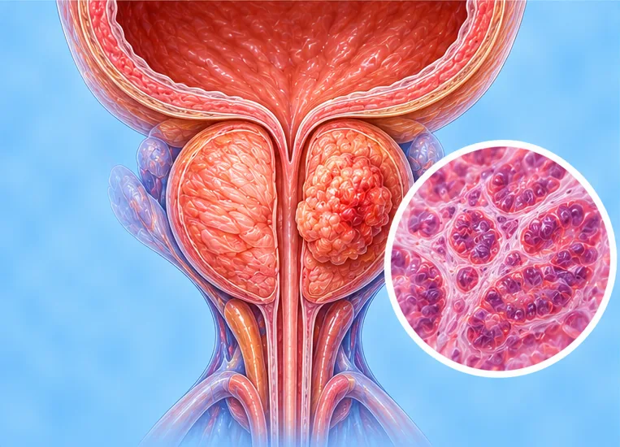

Kanser prostat
Kanser yang bermula di prostat, kelenjar kecil di bawah pundi kencing lelaki
Apa itu
Sel dalam prostat membesar tanpa kawalan; banyak kanser prostat membesar perlahan, tetapi ada yang lebih cepat.
- Kelenjar prostat, pada lelaki
- Lebih biasa pada lelaki berumur
- Sering tiada tanda pada mulanya
- Jumpa doktor
- Pakar urologi, pakar onkologi (kanser), doktor keluarga
- Biasa pada
- Kebanyakannya lelaki berumur; lebih mungkin jika saudara terdekat pernah menghidapinya
- Berjangkit
- Tidak
- Perjalanan
- Berbeza bagi setiap orang; pasukan penjagaan kanser anda boleh menerangkan apa yang dijangka
Tanda biasa

Selalunya tiada tanda pada awalnyaAsimptomatik 
Bangun malam untuk kencingNokturia Air kencing merah jambu atau merahHematuria 
Berat badan turun tanpa sebabPenurunan berat badan tanpa sengaja
Tanda-tanda lain
- Sakit di belakang, pinggul atau pelvis, jika ia sudah merebak ke tulang
Mengapa ia berlaku

Punca belum diketahui sepenuhnyaIdiopatik 
Peningkatan usiaPenuaan 
Diwarisi dalam keluargaKecenderungan genetik
Punca lain
- Bapa, adik-beradik lelaki atau saudara terdekat yang pernah menghidapinya
Jumpa doktor dahulu jika
- Langsung tidak dapat kencing walaupun terasa mahu: pergi ke hospital segera
- Kelemahan atau kebas baru pada kaki, atau hilang kawalan kencing atau najis: pergi ke hospital segera
- Darah dalam air kencing atau air mani
- Masalah kencing yang berlarutan beberapa minggu, seperti pancutan lemah atau terlalu kerap kencing
- Sakit baru di belakang, pinggul atau pelvis yang semakin teruk
- Berat badan menurun tanpa sebab, atau berasa sangat letih selama beberapa minggu
Jika mana-mana berkenaan, sila jumpa doktor sebelum sesi.
Halaman ini ialah maklumat am. Sila terus mengambil ubat biasa anda dan terus berjumpa doktor.
Teruskan mengambil ubat biasa anda dan terus berjumpa doktor. Sesi kami ialah sokongan lembut dan tidak menggantikan rawatan perubatan.
Menjaga diri

Ikut pelan pasukan rawatanSusulan pakar 
Kekal aktif setiap hariAktiviti fizikal berkala 
Berbual dengan keluarga dan kawanSokongan sosial
Lebih banyak cara menjaga diri
- Jangan berhenti atau menukar rawatan kanser atau ubat anda sendiri
- Tanya pasukan anda tentang kesakitan, makanan dan keletihan; bantuan tersedia
Beritahu ahli terapi anda
- Kanser atau rawatan kanser
- Tulang lemah
- Ubat pencair darah
- Perentak jantung atau implan logam
Ahli terapi anda akan menyemaknya bersama anda sebelum bermula.
Soalan dan jawapan
Apakah Kanser prostat?
Kanser yang bermula di prostat, kelenjar kecil di bawah pundi kencing lelaki. Sel dalam prostat membesar tanpa kawalan; banyak kanser prostat membesar perlahan, tetapi ada yang lebih cepat.
Apakah tanda biasa Kanser prostat?
Selalunya tiada tanda pada awalnya · Bangun malam untuk kencing · Air kencing merah jambu atau merah · Berat badan turun tanpa sebab
Mengapa Kanser prostat berlaku?
Punca belum diketahui sepenuhnya · Peningkatan usia · Diwarisi dalam keluarga
Bagaimana menjaga diri dengan Kanser prostat?
Ikut pelan pasukan rawatan · Kekal aktif setiap hari · Berbual dengan keluarga dan kawan
Bolehkah sesi AI Body Master membantu Kanser prostat?
Sesi ialah sokongan meridian tanpa jarum yang lembut untuk kesejahteraan anda. Ia tidak merawat atau menyembuhkan Kanser prostat dan tidak menggantikan ubat atau doktor anda. Beritahu ahli terapi anda sebelum sesi bermula.
Keadaan berkaitan
Rujukan: General information based on public health sources such as Mayo Clinic, NHS, Cleveland Clinic and NCBI StatPearls.
Halaman dikemas kini: 2026-11-09